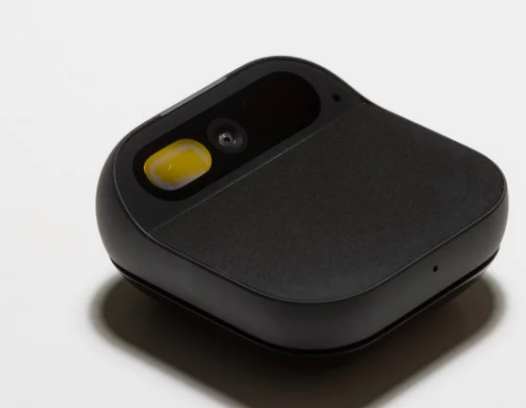

The AI gadgets that absolutely did not need to exist.

Every few years, tech companies decide your smartphone is obsolete — not because it stopped working, but because they would like to sell you another rectangle. Enter the Rabbit R1, a $200 bright-orange gadget that promised to replace your phone using “AI.” It could see the world with its camera, answer questions, and eventually perform tasks through something called a Large Action Model. In theory, it was your pocket-sized digital assistant. In practice, it was a slower version of apps you already had. Reviews described it as “barely reviewable,” “largely useless,” and eventually, “paperweight-adjacent.”
The problem wasn’t that the Rabbit R1 did nothing — it did things. Just not faster, better, or more conveniently than the device already in your pocket. Vision recognition? Google Lens does that. Voice queries? Your phone has been doing that for years. Agentic AI? It mostly launched with promises instead of features. It turns out that replacing the smartphone requires more than just enthusiasm and a SIM card slot.
Then there was the Humane AI Pin — a $700 wearable assistant that projected information onto your palm like a low-budget sci-fi prop. Instead of a screen, you got a tiny laser display. Instead of smooth performance, you got overheating. Instead of convenience, you got a monthly $24 subscription just to keep it functioning. It clipped to your shirt, ran hot against your chest, and did many of the same things your phone could do — only slower, dimmer, and with more friction.
The Humane AI Pin was discontinued not long after launch, refunds were limited, and the internet moved on.
The Rabbit R1 is technically still around, but the early hype cycle has cooled dramatically. What both devices
highlight is something we’re seeing more often: AI as a marketing layer wrapped around hardware that doesn’t
justify its existence. It’s not that AI can’t be useful — it clearly can. It’s that sometimes the smartest move
is not building a new device at all.
Original reporting:
slashgear.com